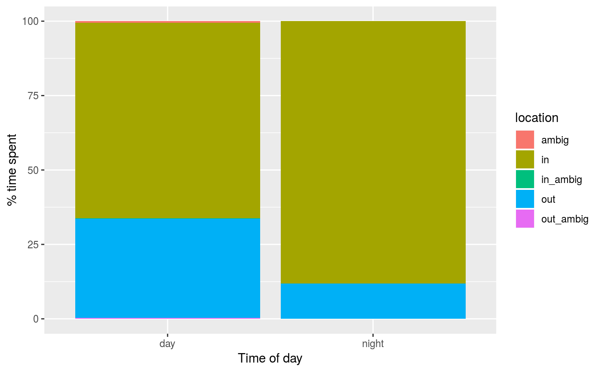

Split cavity use bouts at midnight, midday, or at sunrise/sunset. The output from cavity_detect is automatically split at midnight.
cavity_split(cavity, split = c("midnight", "midday", "riseset"), sun = NULL, loc = NULL)
| cavity | Data frame. Bouts of cavity use, output from
|
|---|---|
| split | Character. One of "midnight" (default), "midday", or "riseset" |
| sun | Data frame. Detected sunrise and sunset events, output of
|
| loc | Numeric vector. Longitude and Latitude of the observations (if not
in the data, this must be provided when |
cavity data frame with bouts of cavity use split according to the specification.
Depending on your area of interest, when summarizing cavity use data, you'll want to collapse cavity use according to different time frames.
split = "riseset" Split at sunrise and sunset to separate cavity use
during the day from that at night
split = "midnight" Split at midnight to separate cavity use between
date, focusing on daytime patterns
split = "midday" Split at noon to separate cavity use between days,
focusing on nighttime patterns
s <- sun_detect(flicker) e <- cavity_detect(flicker, sun = s) loc <- c(flicker$lon[1], flicker$lat[1]) e_day <- cavity_split(e, loc, split = "riseset", sun = s) library(dplyr) library(tidyr) library(ggplot2) e_summary <- e_day %>% group_by(side, location) %>% summarize(hrs = sum(length_hrs)) %>% group_by(side) %>% mutate(p = hrs/sum(hrs) * 100) %>% complete(location = unique(e$location), fill = list(p = 0)) ggplot(data = e_summary, aes(x = side, y = p, fill = location)) + geom_bar(stat = "identity") + labs(x = "Time of day", y = "% time spent")